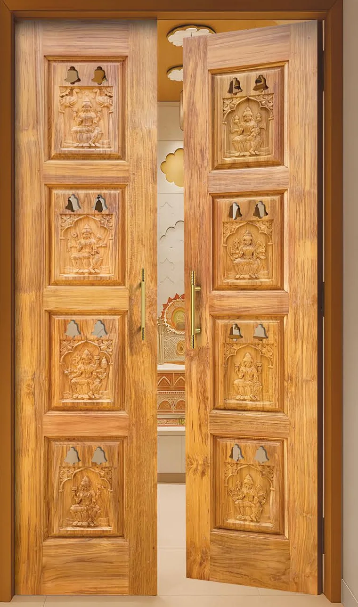
Every home begins at the door.
Carved teak entrance and pooja doors, with veneer, primer and WPC doors for every room. Made in Bangalore.
Every home begins at the door.
Carved teak entrance and pooja doors, with veneer, primer and WPC doors for every room. Made in Bangalore.
- Handcrafted teak main doors
- Carved pooja doors
- Teak architecture doors
- Natural veneer doors
- Primer doors, ready to paint
- Waterproof WPC doors
- 500+ designs
- Custom sizes and installation
JJ Doors in numbers
-
2011
Year established
Entrance, pooja and architectural doors, made in Bangalore.
-
500+
Designs in our library
Traditional hand carving, modern veneers and WPC styles.
-
375
Designs in the 2026–28 catalogue
Eight collections, each design with its own model code.
-
Doors delivered
[PLACEHOLDER: one figure. The current site says 2,500+ projects and 10,000+ doors]
Mastering the art of door craftsmanship.
We make doors for homes, temples, offices and commercial spaces across India, from carved teak to moisture-resistant WPC.
-
Handcrafted since 2011.
Our craftsmen carve teak panels by hand, and every door gets a dimensional check before it leaves.
-
500+ designs, or yours.
Traditional carving to contemporary grooves. Bring a drawing and we will work from it.
-
Made to your opening.
Custom sizes, and Vastu-aligned designs for main and pooja doors.
-
From frame to fitting.
Teak frames (vaskal), WPC and UV coated frames, site measurement, delivery and installation.
Eight collections. 375 designs.
Start with the room, the budget or the look. Every design carries a model code, so you can ask for it by name.
134 designs
Teak Main Doors
Carved solid teak for the main entrance.
Explore
53 designs
Teak Pooja Doors
Carved teak with jaali and bells for the prayer room.
Explore
52 designs
Teak Architecture Doors
Grooved and inlaid teak in contemporary patterns.
Explore
52 designs
Veneer Doors
Natural teak veneer and patterned veneer faces.
Explore
27 designs
Premium Primer Doors
Routed designs, primed and ready to paint.
Explore
19 designs
Primer Doors
Simple grooved doors, primed and ready to paint.
Explore
36 designs
WPC Doors and Frames
Waterproof WPC for bathrooms and utility areas.
Explore
2 designs
UV Coated Doors and Frames
Wood-finish doors and frames with a UV-cured coat.
Explore
JJ 449
JJ 405 LAXMI
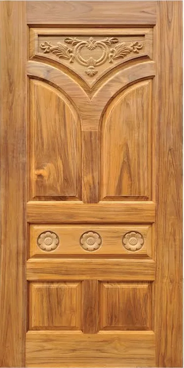
JJ 186
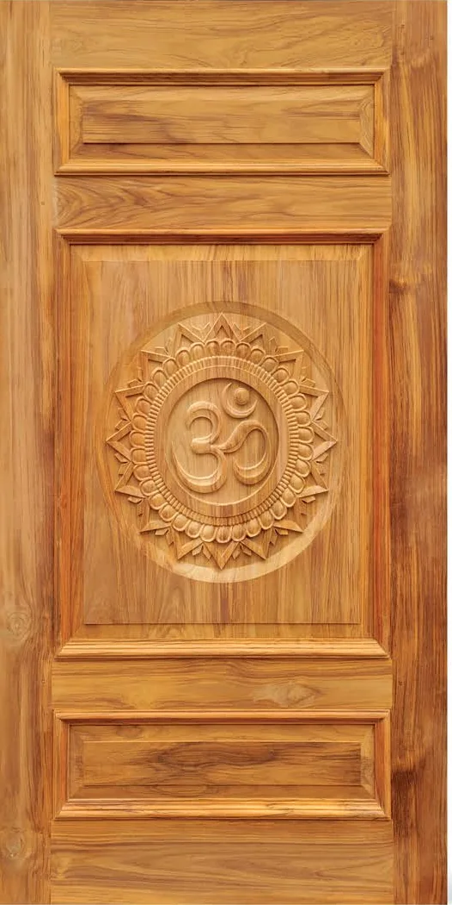
JJ 479
JJ 2049
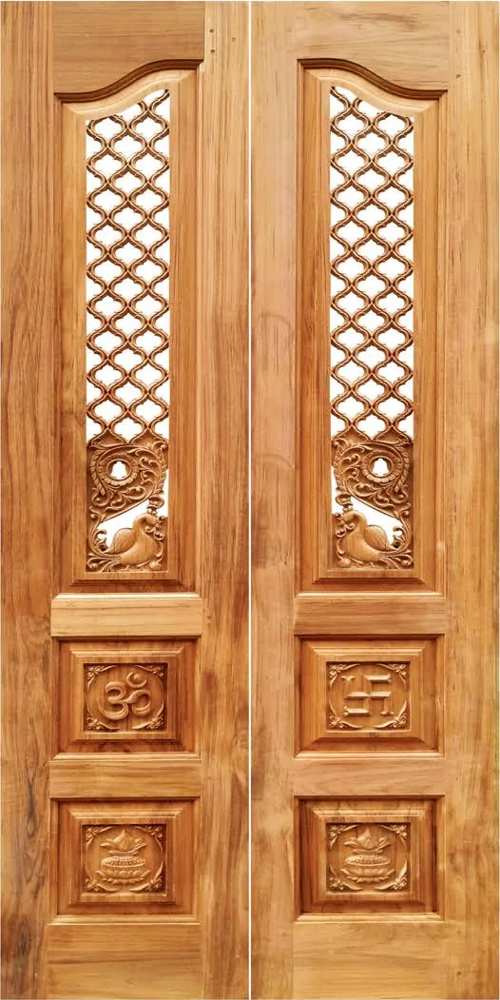
JJ 2034
JJ 2043
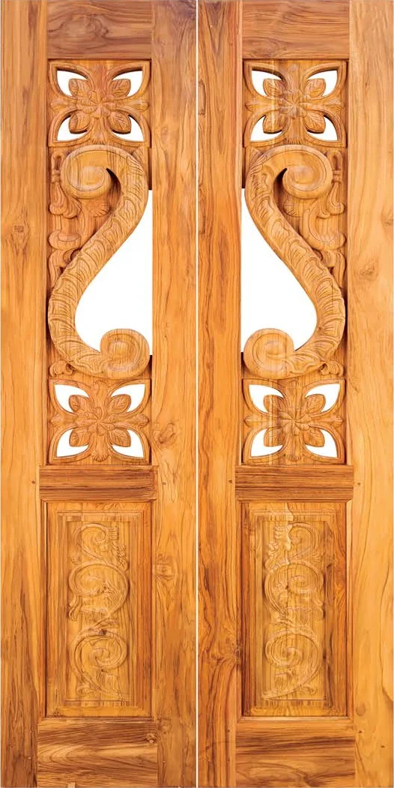
JJ 2055
JJ 1020
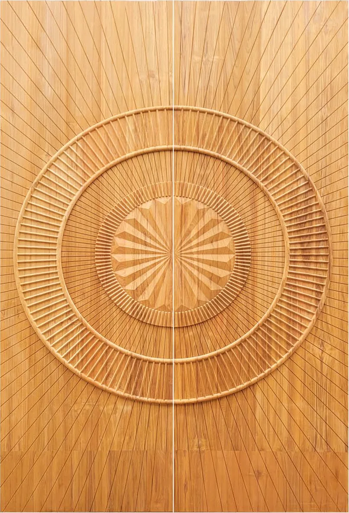
JJ 1034
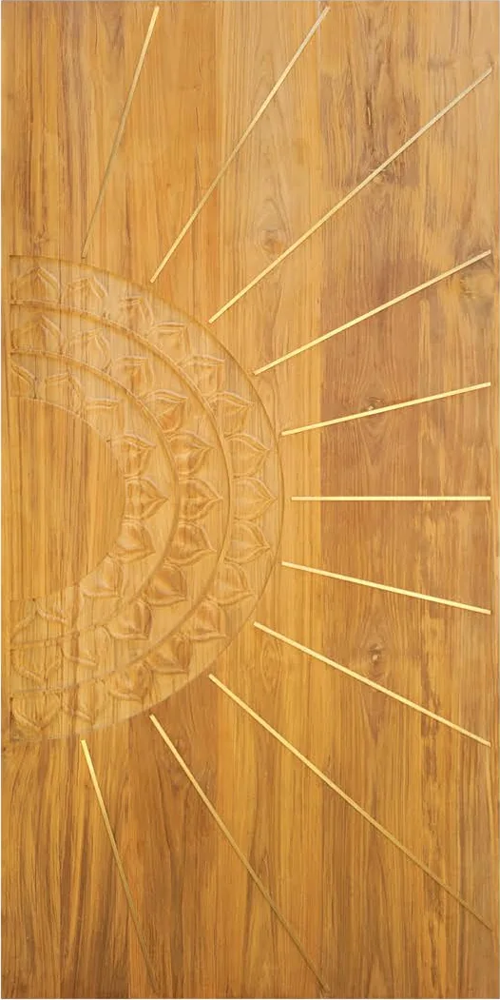
JJ 1025
JJ 1035
V 1536
V 1521
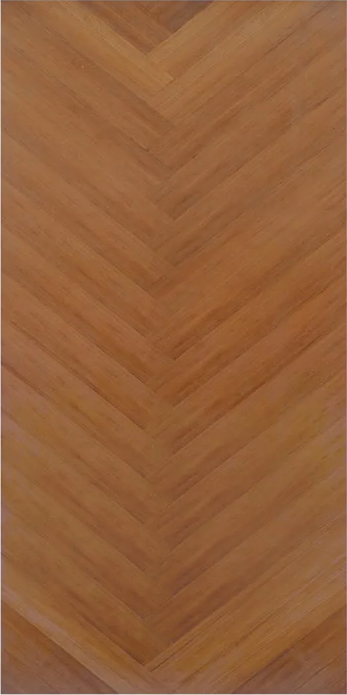
V 1516
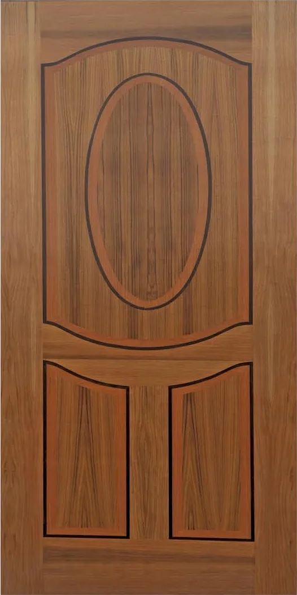
V 1501 (TEAK)
JJ PC49PP
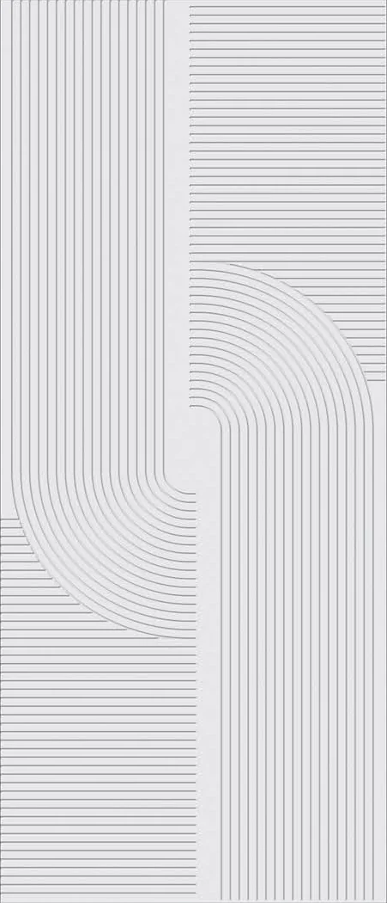
JJ PC37PP
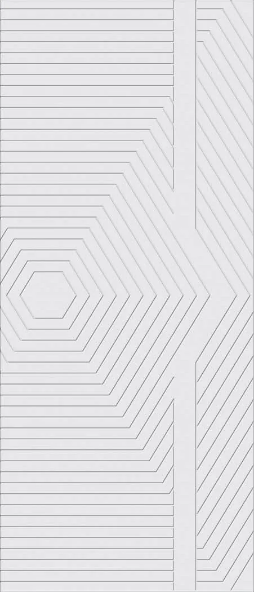
JJ PC34PP
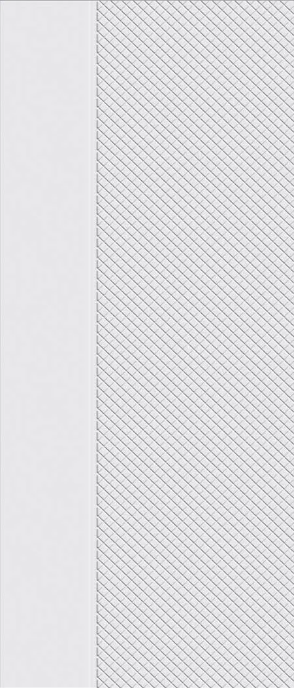
JJ PC24PP
JJ PC08
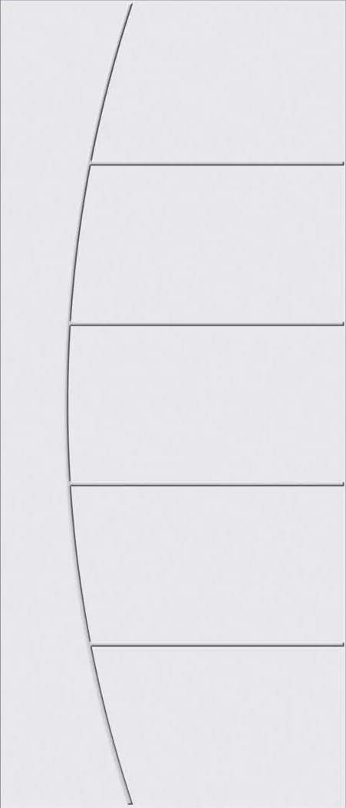
JJ PC06
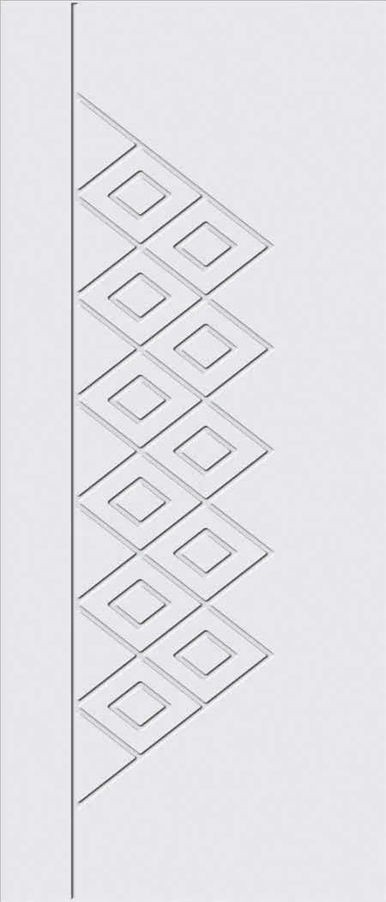
JJ PC16
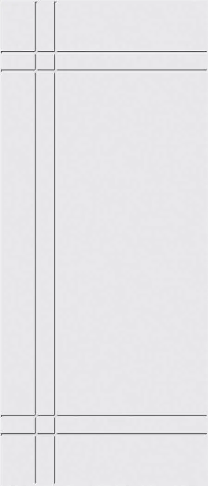
JJ PC01
JJ WPC41
JJ WPC24
JJ WPC01
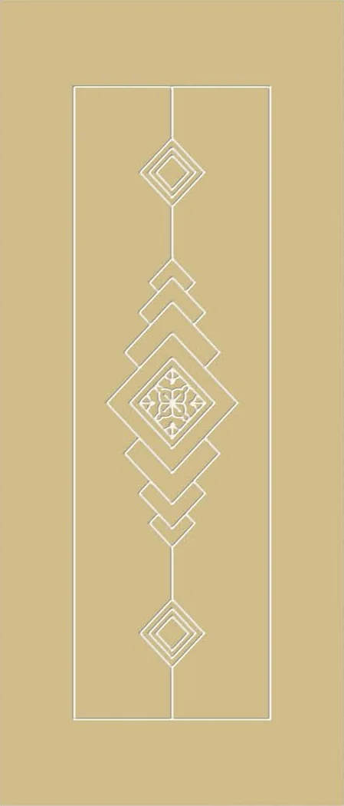
JJ WPC45
2 designs
UV Coated Doors and Frames
Wood-finish doors and frames with a UV-cured coat.
Explore the collectionJJ 101
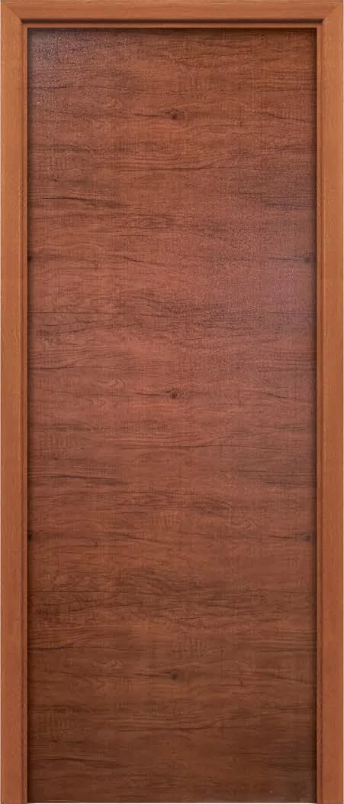
JJ 102
Not sure which one? Ask on WhatsApp
Get a quote.
Tell us what you need. We will get back to you with options and a price.
Thank you.
We have your request and will contact you soon.
Read before you choose.
Short guides from the JJ Doors team. [PLACEHOLDER: fact-check claims before publishing]
Let’s craft your doorway.
From carved teak to sleek veneer and waterproof WPC, tell us about your opening and we will help you choose.